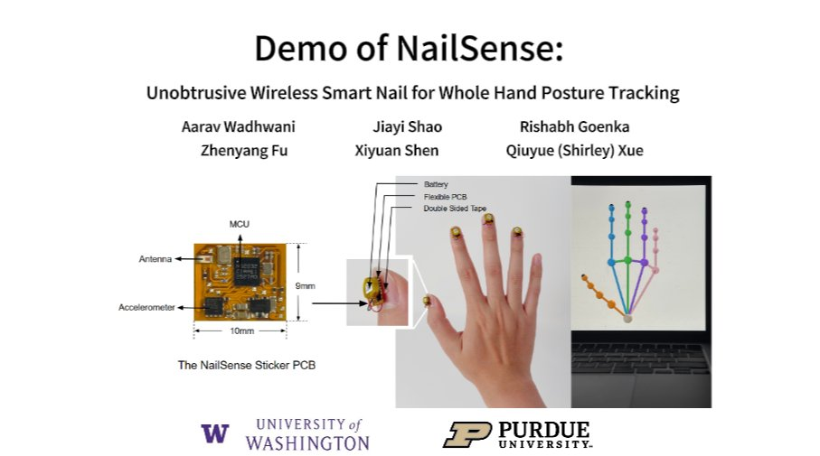

UW Ubicomp Lab — NailSense
Jun 2026 – Aug 2026Research Assistant · co-author, UIST 2026 demo (accepted)

- Built and assembled flex-PCB wireless smart nail stickers for whole-hand posture tracking: fine-pitch soldering of nail-scale assemblies, plus battery charging and handling for the wireless prototypes.
- Owned the fingernail attachment across three iterations. Silicone substrates rejected adhesives because of their low surface energy; adhesive on the electronics face delaminated the flex PCB under peel force; moving the adhesive to the back surface eliminated PCB stress and improved conformity to the nail.